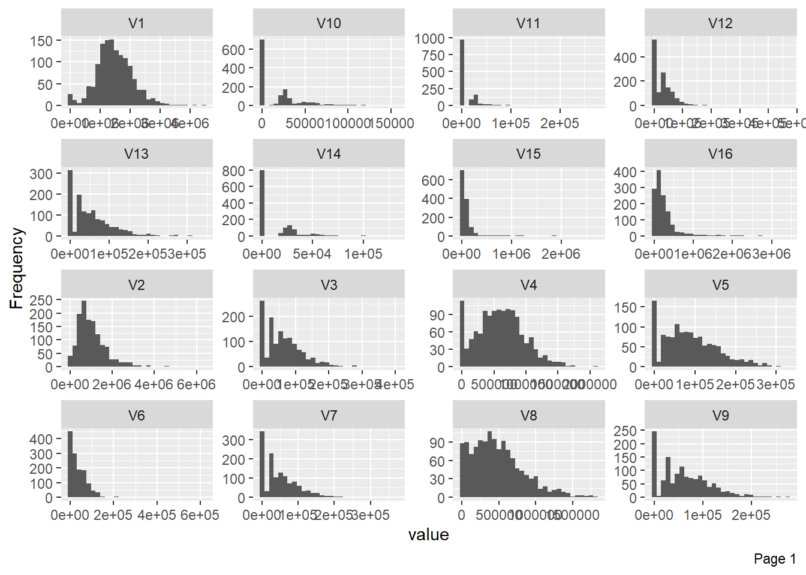
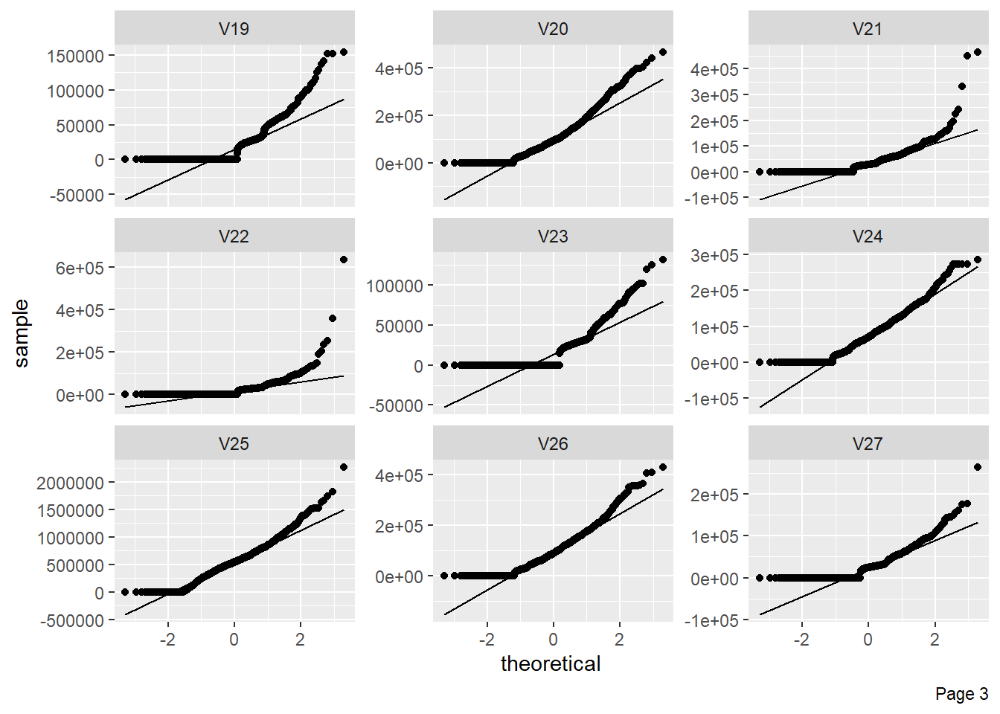
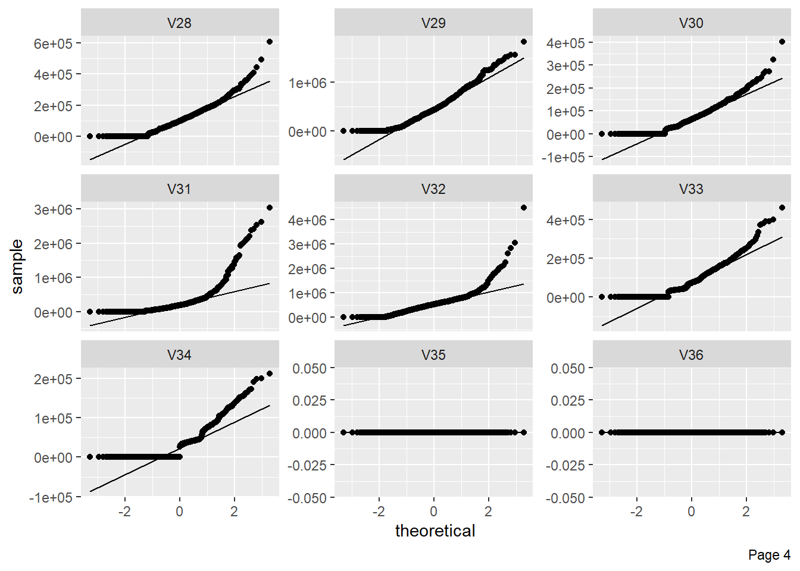

Exploratory Data Analysis
Data Exploration:
Real world datasets are mostly imbalanced. The COVID-19 CXR (Chest X-Rays) dataset we used has around 1000 to 313 negative to positive ratio. That there are nearly three times more negative cases than that of positive. The classification algorithms in this case tends to favor the majority class. The distribution of the classes in the dataset in reality refers to the actual class distribution of the covid affected cases. Hence, the learning task in hand is a imbalanced learning task because there are more people with healthy lungs than that of with COVID-19.
There are several methods to deal with this problem in classification setting, where the main objective is to rebalance the distribution by resampling the data to reduce the class imbalance problem, namely oversampling and under sampling. For our purpose we have used k fold cross-validation to train our model, where the data is split into multiple portions, and then (k-1) splits are used for training and 1 split for validation. And then this process is repeated several times. Our Dataset consists of 313 Positive COVID CXR and 1000 Negative CXR collected from four different sources to make our version of the dataset to work upon. This includes COVIDx dataset of [1][^1], Kaggle CXR Pneumonia dataset by Paul Mooney [^2], CXR images of adult subjects from the RSNA Pneumonia Detection Challenge [^3], original and augmented versions of COVID-19 examples [^4] from [2].
The image below is an instance of COVID negative image. The figure above shows an instance of a COVID-19 negative images. Similar to this image, all the images in the dataset are in Standard RGB color space. The dataset contains files in .jpg, .jpeg and .png formats. All the files are standardised to .png format for the ease of further processing.
## format width height colorspace matte filesize density
## 1 JPEG 657 735 sRGB FALSE 101551 300x300These are 1000 COVID-19 negative and 313 COVID-19 positive CXR images. This shows a high skew towards positives in the dataset just for the reason of less availability of negatives in comparision to positives.
The figure above shows the skewness of the distribution of the data. The plot states the frequency of the positive and negative images in the dataset. Here, for the interpretation; 0 is taken as COVID negative and 1 as COVID positive. The figure delineates the ratio of images as being approx. 3:1. This signifies the data being skewed towards the positive instances.
Pie chart is the simplest representation of the dataset. This shows amount of images in percentage.
Data Pre-processing
The raw images are fed into the Local Binary Pattern Algorithm. The Algorithm takes the images and resizes into 256*256 height to width format.
## # A tibble: 1 x 7
## format width height colorspace matte filesize density
## <chr> <int> <int> <chr> <lgl> <int> <chr>
## 1 JPEG 229 256 sRGB FALSE 0 300x300Feature Extraction
For CXR images, the visual attribute that shows the most promising results are the texture based descriptors. There are several texture based descriptors that are available, both handcrafted and non handcrafted, however, we have focused mostly on the widely used Local Binary Patterns, formularized by [3].
LBP is a powerful texture descriptor, that has been applied on several classification tasks involving the texture. The LBP is calculated on a pixel to pixel basis by considering a center pixel(c) and its neighbourhood pixels (n) with some radius. Each neighbour pixel n is compared with center pixel c by means of substracting the grey values say g(c) and g(n) to get a distance d, such that if the d is negative then 0 is substituted in the place of the neighbour pixel else 1.
\[d = 1~~iff~~g(c)-g(n)≥0\] \[d=0~otherwise\]
The descriptor is then the histogram of such which counts the occurrence of binary pattens. The histogram depends on the setup of the radius and the obviously the pixel neighborhood. LBP has been successfully tried on several classification techniques [4]
Parameters: Parameters used for the purpose are LBP 8,2 with 58 dimensions. The details of the parameters can be found in [3].
Vectors: As is previously explained there are total of 58 dimensions, to the descriptor. For a given CXR image we initially ran the descriptor on the complete image, and thus the descriptors obtained were very rich.
However, with this setting there is a problem, that the CXR image not only captures the area of the lungs but the whole rib cage, which includes other organs too. Hence there is much noise considering out aim of getting the features our of the are of the lungs. For that purpose we used segmentations, to segment the area of the lungs our by means of a mask and then calculate the LBP for the masked area.
## # A tibble: 1 x 7
## format width height colorspace matte filesize density
## <chr> <int> <int> <chr> <lgl> <int> <chr>
## 1 JPEG 229 256 sRGB FALSE 0 300x300


As expected in this case, the figure below shows some of the bins of the histogram are empty due to the usage of masking of the image.

Histogram of Image after LBP
All the images are converted into grayscale because the Local Binary Pattern works only with grayscale images.
img <- grayscale(img)The Algorithm converts the images into a data matrix and feds it into local binary function which creates the lbp vectors for the corresponding image.
imgm <- data.matrix(img)
lbpd <- lbp(imgm, 2)0 for COVID negatives and 1 for COVID positives.
The figure below shows the structure of the data frame.
Since the real world data can be messy, the following plot below shows the missing values in columns. All the columns are kept nameless and are therefore by default named “V#” with its repective column number.
The figures below shows column-wise vector representation: 
The following plot shows visualisation of distribution of lbp vector column-wise: 
The figure below shows that very few columns vectors appears to be correlated. This is the case because the data has been masked.
The figure shows Quantile-Quantile plot showing distribution of all the columns compared to normal distribution. 
The following shows the variance in percentage for all the lbp vectors by Principal Component Analysis.
References
[1] M. Karim, T. Döhmen, D. Rebholz-Schuhmann, S. Decker, M. Cochez, O. Beyan, others, Deepcovidexplainer: Explainable covid-19 predictions based on chest x-ray images, arXiv Preprint arXiv:2004.04582. (2020).
[2] J.P. Cohen, P. Morrison, L. Dao, COVID-19 image data collection, arXiv 2003.11597. (2020). https://github.com/ieee8023/covid-chestxray-dataset.
[3] T. Ojala, M. Pietikäinen, D. Harwood, A comparative study of texture measures with classification based on featured distributions, Pattern Recognition. 29 (1996) 51–59.
[4] P.L. Paula Filho, L.S. Oliveira, S. Nisgoski, A.S. Britto, Forest species recognition using macroscopic images, Machine Vision and Applications. 25 (2014) 1019–1031.